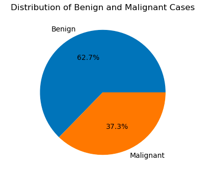

Project Details
Breast Cancer Analysis
Introduction
Breast cancer is a prevalent form of cancer that affects a significant number of individuals, predominantly women. Early detection and accurate diagnosis are crucial for effective treatment. This project aims to analyze breast cancer data, focusing on key features, their distributions, and the development of a predictive model for new data.
Dataset üìà
The dataset used in this analysis is the Breast Cancer Wisconsin (Diagnostic) Data Set, available from the UCI Machine Learning Repository. It contains features computed from a digitized image of a fine needle aspirate (FNA) of a breast mass.
Exploratory Data Analysis (EDA) üìä
Distribution of Radius Mean
The first step involves exploring the distribution of the mean radius of the breast mass. This analysis provides insights into the central tendency and variability of this crucial feature.
Distribution of Benign and Malignant Cases
Next, I examine the distribution of benign and malignant cases in the dataset. Understanding the balance or imbalance between these classes is essential for model training and evaluation.
Feature Distributions by Diagnosis
To gain a deeper understanding, I analyze the distributions of other important features based on the diagnosis (benign or malignant). Features such as mean texture, mean smoothness, etc., will be explored to identify patterns and differences between the two classes.
Correlation Heatmap of Features üåê
A correlation heatmap is generated to visualize the relationships between different features. Identifying highly correlated features is crucial as it helps in feature selection and understanding the underlying patterns in the data.
Predictions of New Data üöÄ
Finally, the trained model is used to make predictions on new, unseen data. This step simulates the real-world application of the model in diagnosing breast cancer cases.
Conclusion üéâ
In conclusion, this breast cancer analysis project provides valuable insights into the characteristics of benign and malignant cases. The predictive model developed can aid in the early detection of breast cancer, contributing to more effective treatment and improved patient outcomes.